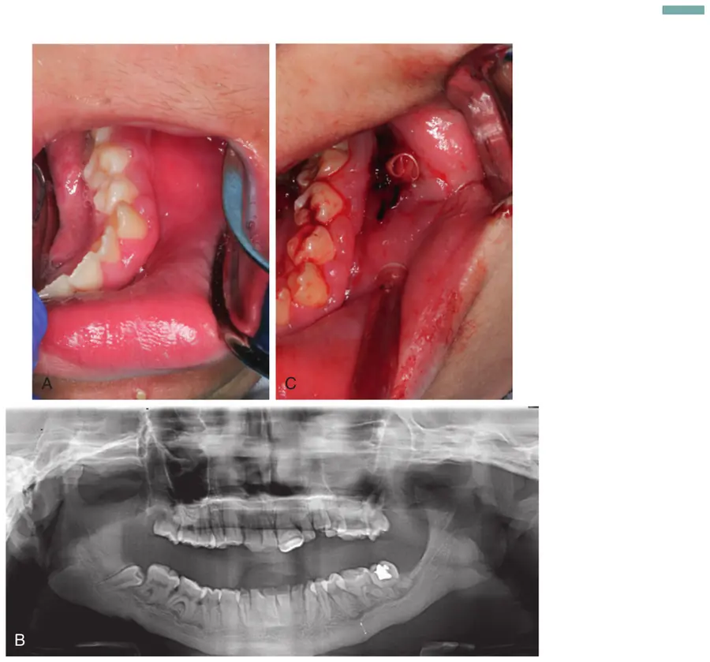

نسخه استخراجشده؛ ترجمه یا تأیید علمی انجام نشده است. وضعیت: captured
یافتههای کلیدی و معنای بالینیشان — دقیقاً به همان شکلی که در شرح پرونده آمده:

و مدیریت و منطقش:
سه چیز را از این پرونده بردار: ظاهر بیمار، عمق محل، و کفایت دسترسی. هر سه با هم، اجازهی درمان در مطب را میدهند.
همان قالب، ولی یافتههای کاملاً متفاوت:
و مدیریت — کاملاً متفاوت:
و مهمترین درس این مقایسه: تفاوت این دو پرونده در «چقدر تورم بزرگ است» نبود — در سفتی بافت، عمق فضای درگیر، و محدودیت دسترسی برای معاینه بود.